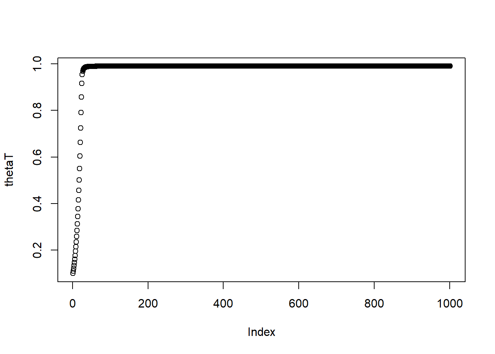

4 Behavioral econometrics
4.1 Example dataset
library(foreign)
library(ggplot2)
Hey2001<- read.csv("../2021ECON5820/Hey2001.csv")
knitr::kable(head(Hey2001))| id | t | q1 | q2 | q3 | q4 | p1 | p2 | p3 | p4 | y |
|---|---|---|---|---|---|---|---|---|---|---|
| 1 | 1 | 0 | 0 | 0.875 | 0.125 | 0 | 0.125 | 0.000 | 0.875 | 0 |
| 1 | 2 | 0 | 0 | 0.875 | 0.125 | 0 | 0.125 | 0.000 | 0.875 | 0 |
| 1 | 3 | 0 | 0 | 0.875 | 0.125 | 0 | 0.125 | 0.500 | 0.375 | 1 |
| 1 | 4 | 0 | 0 | 0.875 | 0.125 | 0 | 0.375 | 0.000 | 0.625 | 0 |
| 1 | 5 | 0 | 0 | 0.875 | 0.125 | 0 | 0.375 | 0.125 | 0.500 | 1 |
| 1 | 6 | 0 | 0 | 0.875 | 0.125 | 0 | 0.375 | 0.250 | 0.375 | 1 |
- decisions over 2 lotteries. \(p\) or \(q\)
- \(y=1\) iff \(i\) chooses the q-lottery in decision \(t\)
- prizes: 0, 50, 100, 150 pounds
4.2 Risk neutral
Maximization problem \[ \max_l\{E[u(X\mid l)]\} \]
Probabilistic choice function. Given choice set \(\mathbb A\) (softmax) \[ \Pr\left(l\right)\propto \exp\left(\lambda E[u(x)\mid l]\right) \]
- As the utility of one action increases, I am more likely to take it.
- Interpretations
- I make mistakes, but I recognize big payoff differences better than small ones
- There is a random component to my utility (observed by the decision-maker but not econometrician)
- There is a component of my utility that is not modeled well by \(E[u(x)\mid l]\)
Since we have only 2 choices, this becomes:
\[ \begin{aligned} \Pr(y=1\mid p,q)&=\frac{\exp(\lambda E[u(x)\mid q])}{\exp(\lambda E[u(x)\mid q])+\exp(\lambda E[u(x)\mid p])}\\ &=\left(1+\exp\left(\lambda\left(E[u(x)\mid p]-E[u(x)\mid q]\right)\right)\right)^{-1} \end{aligned} \]
log-likeihood function: \[ \mathcal L(\theta)=\sum_{t=1}^T\Pr(y_t\mid p_y,q_t) \]
For risk-neutral: \(u(x)=x\)
library(dplyr)
D<-(Hey2001
%>% mutate(EVq = 0*q1+50*q2+100*q3+150*q4,
EVp = 0*p1+50*p2+100*p3+150*p4
)
%>% mutate(DEV = EVq-EVp)
)
head(D)## id t q1 q2 q3 q4 p1 p2 p3 p4 y EVq EVp DEV
## 1 1 1 0 0 0.875 0.125 0 0.125 0.000 0.875 0 106.25 137.50 -31.25
## 2 1 2 0 0 0.875 0.125 0 0.125 0.000 0.875 0 106.25 137.50 -31.25
## 3 1 3 0 0 0.875 0.125 0 0.125 0.500 0.375 1 106.25 112.50 -6.25
## 4 1 4 0 0 0.875 0.125 0 0.375 0.000 0.625 0 106.25 112.50 -6.25
## 5 1 5 0 0 0.875 0.125 0 0.375 0.125 0.500 1 106.25 106.25 0.00
## 6 1 6 0 0 0.875 0.125 0 0.375 0.250 0.375 1 106.25 100.00 6.25Define and maximize likelihood:
LL<-function(lambda,DEV,y) {
# somthing in here to change DEV to DEU
sum(-log(1+exp((-1)^y*lambda*DEV)))
}
LL(1,D$DEV,D$y)## [1] -78116.31## $minimum
## [1] 0.06112392
##
## $objective
## [1] 15170.624.3 Estimate a \(\lambda_i\) for every subject (split by ID)
lambdaHat<-function(DEV,y) {
optimize(function(x) {-LL(x,DEV,y)}, c(0, 1))$minimum
}
print(lambdaHat(D$DEV,D$y))## [1] 0.06112392LambdaHatEstimates<-(D
%>% group_by(id)
%>% summarize(lhat = lambdaHat(DEV,y)))
LambdaHatEstimates %>% head() %>% knitr::kable()| id | lhat |
|---|---|
| 1 | 0.0293029 |
| 2 | 0.0461682 |
| 3 | 0.0412640 |
| 4 | 0.1111173 |
| 5 | 0.0374135 |
| 6 | 0.1656475 |

In context: \[ \Pr(\text{chooses y to max DEV})=(1+\exp(-\lambda |\mathrm{DEV}|)^{-1} \] on average, a subject will choose the “right” action with probability \[ \frac{1}{T}\sum_{t=1}^T(1+\exp(-\lambda |\mathrm{DEV}_t|)^{-1} \]
LogitResponse<-function(l,DEV) {
mean(1/(1+exp(-l*abs(DEV))))
}
EVloss<-function(l,DEV) {
p<-(1/(1+exp(-l*abs(DEV))))
mean(p*0+(1-p)*abs(DEV))
}
LambdaHatEstimates<-(D
%>% left_join(LambdaHatEstimates,by="id")
%>% group_by(id)
%>% summarize(PrHat = LogitResponse(lhat,DEV),
EVloss = EVloss(lhat,DEV),
lhat = mean(lhat))
)
LambdaHatEstimates %>% head() %>% knitr::kable()| id | PrHat | EVloss | lhat |
|---|---|---|---|
| 1 | 0.6032170 | 4.663298 | 0.0293029 |
| 2 | 0.6500962 | 3.537870 | 0.0461682 |
| 3 | 0.6374532 | 3.826159 | 0.0412640 |
| 4 | 0.7619261 | 1.450055 | 0.1111173 |
| 5 | 0.6269719 | 4.073668 | 0.0374135 |
| 6 | 0.8097907 | 0.812481 | 0.1656475 |

(
ggplot()
+stat_ecdf(data=LambdaHatEstimates,aes(x=EVloss,color="Estimated expected loss"))
+stat_ecdf(data=D %>% filter(id==1),aes(x=abs(DEV),color="Theoretical max"))
+xlab("Expected loss relative to EV-maximizing (pounds)")
)
4.4 To do
- Add in risk aversion \(u(x)=x^r\) (\(r>0\)). suggestion Estimate \(\log r\) and \(\log \lambda\) directly, then transform